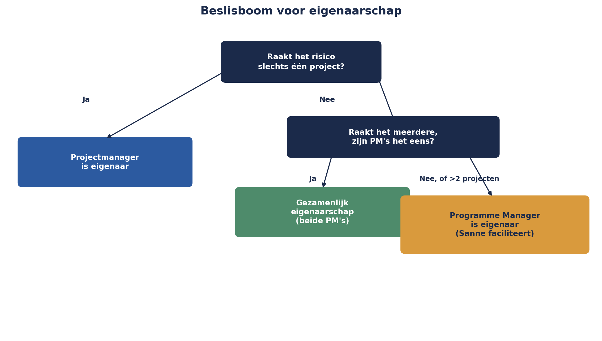

Deel 17 — Geaggregeerd risico en risico in verschillende leveringsmodellen
Niveau 2 — Professional · Reader
17.0 De vraag die vijf delen heeft opengestaan
Sinds deel 13 staat er een vraag open: wie is eigenaar van een risico dat niet bij één van de vijf projecten van het Mutatieplatform hoort, maar in de ruimte ertussen ontstaat? De API-datum-kwestie tussen Project 1 en Project 2. De sequencing tussen Project 3 en Project 5. Het gedeelde leveranciersrisico tussen Project 1 en Project 4, waarvan de bow-tie in deel 16 liet zien dat de gevolgen zich over twee projecten verspreiden.
Er is nog een tweede, verwante vraag die net zo lang is blijven liggen: kun je de risicoscores van de vijf projectregisters gewoon bij elkaar optellen om een programmabreed risicobeeld te krijgen? Het korte antwoord, zoals dit deel laat zien, is nee — en de reden waarom niet, is dezelfde reden die de eigenaarsvraag beantwoordt.
17.1 Waarom optellen niet mag
Drie redenen, elk voortbouwend op een eerder deel van deze cursus.
Ordinale schalen optellen is net zo problematisch als ze vermenigvuldigen. Matrixvalkuil 1 uit deel 5 (niveau 1) liet zien dat kans 5 × impact 1 en kans 1 × impact 5 dezelfde rekenkundige score opleveren, ondanks compleet verschillende risico’s. Datzelfde probleem keert terug, versterkt, als je vijf van zulke scores optelt: een programmabrede “totaalscore” van 60 zegt niets zinvols over of dat vijf risico’s van elk 12 zijn, of één risico van 40 en vier van 5 — en die twee situaties vragen fundamenteel andere aandacht.
Optellen negeert gemeenschappelijke oorzaken. Als drie van de vijf projectrisico’s — schijnbaar onafhankelijk gescoord — in werkelijkheid allemaal voortkomen uit dezelfde onderliggende oorzaak (bijvoorbeeld de capaciteitskrapte bij het testteam uit deel 16), dan telt een simpele optelling die oorzaak drie keer mee als los risico, terwijl het in werkelijkheid één risico is met drie zichtbare symptomen. Dit vertekent het beeld in twee richtingen tegelijk: het overdrijft de totale hoeveelheid risico (drie keer tellen wat één ding is) én het onderschat hoe geconcentreerd de blootstelling werkelijk is (het lijkt verspreid, terwijl het één kwetsbaarheid is).
Kernzin 11 van de cursus: risicoscores optellen zonder naar gemeenschappelijke oorzaken te kijken, verbergt precies het risico dat het meest telt — dat meerdere dingen tegelijk misgaan, om dezelfde reden.
Optellen negeert correlatie. Dit is de kwantitatieve versie van hetzelfde probleem, al uitgewerkt in deel 15: de Monte Carlo-simulatie liet zien dat de staart van de verdeling (de kans op een werkelijk slecht scenario) dunner wordt zodra je correlatie tussen P1 en P4 negeert. Een simpele optelling van vijf onafhankelijk behandelde risico’s doet precies dat — ze onderschat hoe vaak “alles tegelijk misgaat”.
17.2 Gemeenschappelijke-oorzaakanalyse
De remedie is niet “helemaal niet aggregeren”, maar bewust op zoek gaan naar gemeenschappelijke oorzaken vóórdat je iets probeert samen te vatten. Dit is in essentie een uitbreiding van de escalatiefactoren uit deel 16, nu toegepast op het hele programmaregister in plaats van op individuele bow-ties.
De praktische techniek: neem alle risico’s uit de vijf projectregisters plus de acht programmarisico’s uit deel 13, en groepeer ze niet naar project, maar naar onderliggende oorzaak. Bij het Mutatieplatform levert dit drie clusters op die eerder niet zichtbaar waren:
Cluster “testcapaciteit”: vier afzonderlijk geregistreerde risico’s (bij Project 2, Project 3, en de escalatiefactor uit deel 16) blijken allemaal terug te voeren op dezelfde onderliggende oorzaak — een structureel tekort aan ervaren testers, gedeeld over het hele programma.
Cluster “externe leveranciersafhankelijkheid”: het conversierisico bij Kadera Software (niveau 1), het gedeelde communicatieplatform-risico (deel 13 en 16), en een nieuw gesignaleerd risico bij Project 2’s database-leverancier — drie risico’s, één onderliggend patroon: Meridiaan heeft voor kritieke onderdelen van het Mutatieplatform stelselmatig één externe partij per component, zonder uitwijkmogelijkheid.
Cluster “gedeelde aannames zonder gezamenlijke toetsing”: de API-datum-kwestie en twee vergelijkbare, nieuw gevonden situaties tussen andere projectparen.

Dit clusteren is het eigenlijke werk van geaggregeerd risicomanagement — niet het optellen van getallen, maar het blootleggen van patronen die de afzonderlijke projectregisters, elk gebonden aan hun eigen grens, niet konden laten zien.
17.3 Concentratierisico
Nauw verwant, maar met een net andere invalshoek: concentratierisico is de vraag of te veel blootstelling samenkomt op één punt — één leverancier, één systeem, één persoon, één technologie — ook als elk afzonderlijk risico dat op dat punt is geregistreerd, individueel klein oogt.
Het cluster “externe leveranciersafhankelijkheid” uit 17.2 is in essentie een concentratierisico: geen van de drie afzonderlijke leveranciersrisico’s scoort op zichzelf hoog genoeg om alarm te slaan, maar de patroon dat Meridiaan voor drie kritieke, verschillende onderdelen van hetzelfde programma zonder uitwijkmogelijkheid afhankelijk is van één partij per onderdeel, is zelf een risico dat in geen van de drie individuele scores wordt weerspiegeld.
Concentratierisico wordt zichtbaar door expliciet te vragen: als ik één as kies (leverancier, systeem, persoon, technologie) en alle risico’s daarlangs sorteer, valt er dan een onevenredige ophoping op één punt? Dit is een aanvullende doorloop, vergelijkbaar met de categorie-gestuurde identificatie uit deel 4 (niveau 1), maar dan toegepast op het geaggregeerde beeld in plaats van op een enkel project.
17.4 Cross-project escalatie: het eigenaarsvraagstuk opgelost
Terug naar de vraag van 17.0. Het antwoord dat Sanne, in overleg met de Sponsoring Group, voor het Mutatieplatform vaststelt, sluit direct aan bij twee eerdere lessen van deze cursus: het eerste-lijns-principe (deel 9, niveau 1: risico hoort daar te zitten waar het werk gebeurt) en Kernzin 6 (de risicofunctie beslist niet namens een eigenaar).
De oplossing: de Programme Manager — de MSP-rol uit de PM-cursus die de dagelijkse coördinatie van het hele programma draagt — is standaard eigenaar van elk risico dat aan meer dan één project toebehoort. Dit is een bewuste keuze: net zoals een projectmanager eerstelijns-eigenaar is van projectrisico’s, is de Programme Manager eerstelijns-eigenaar van programmarisico’s. Sanne blijft, ook hier, tweede lijn: zij faciliteert de identificatie (deel 13), bewaakt de kwaliteit van de aggregatie (dit deel), en escaleert wanneer nodig — maar beslist niet namens de Programme Manager welke respons wordt gekozen.
Een aanvullende regel voor de praktijk: als twee projectmanagers gezamenlijk een oplossing kunnen vinden zonder escalatie naar de Programme Manager, mag dat — eigenaarschap door de Programme Manager is de default bij onduidelijkheid of conflict, geen verplichting om elk grensoverschrijdend risico naar boven te trekken. Dit voorkomt dat de Programme Manager wordt overspoeld met risico’s die de twee betrokken projecten prima zelf kunnen oplossen, en houdt tegelijk een duidelijk escalatiepad open voor als dat niet lukt — bijvoorbeeld wanneer de twee projectmanagers het oneens zijn, zoals aanvankelijk bij de API-datum-kwestie.

17.5 Risico in verschillende leveringsmodellen
Een laatste onderwerp van dit deel, korter behandeld: niet alle vijf projecten van het Mutatieplatform werken volgens hetzelfde leveringsmodel. Project 2 (Verwerkingsengine) werkt volledig agile, met tweewekelijkse sprints; Project 5 (Datakwaliteit en Opschoning) werkt in een meer traditionele, gefaseerde aanpak, vanwege de aard van het werk (grondige, sequentiële opschoning laat zich moeilijk in korte sprints opdelen).
Dit raakt aan ROAM (Resolved, Owned, Accepted, Mitigated), de risicoclassificatie uit de Scrum- en SAFe-wereld, al eerder genoemd in de goedgekeurde opzet van deze cursus. Zonder de scrum- en SAFe-cursussen te herhalen: het punt hier is dat risicomanagement zich moet aanpassen aan het ritme van het leveringsmodel, niet andersom. Voor Project 2 betekent dit dat risico-identificatie is ingebed in elke sprint-planning (een lichte, terugkerende toets, aansluitend bij ROAM), terwijl Project 5 met vaste faseovergangen werkt zoals in deel 7 (niveau 1) beschreven — volledige herziening bij elke fase-overgang, niet bij elke sprint.
Het belangrijkste risico dat uit dit verschil zelf voortvloeit: wanneer risico’s van Project 2 (continu, licht getoetst) en Project 5 (periodiek, zwaar getoetst) samen in het programmaregister terechtkomen, hebben ze een verschillend “leeftijd”-profiel — een risico van Project 2 kan een paar dagen oud zijn, een risico van Project 5 een paar maanden. Bij het clusteren uit 17.2 is het belangrijk deze asymmetrie te herkennen, zodat een schijnbaar “verouderd” risico van Project 5 niet ten onrechte als minder urgent wordt gelezen dan een “vers” risico van Project 2, puur op basis van hoe recent het voor het laatst is bekeken.
Samenvatting van deel 17
- Risicoscores over projecten heen optellen is problematisch om drie redenen: ordinale schalen optellen is net zo onbetrouwbaar als vermenigvuldigen, het negeert gemeenschappelijke oorzaken, en het negeert correlatie.
- Kernzin 11: risicoscores optellen zonder naar gemeenschappelijke oorzaken te kijken, verbergt precies het risico dat het meest telt — dat meerdere dingen tegelijk misgaan, om dezelfde reden.
- Gemeenschappelijke-oorzaakanalyse groepeert risico’s naar onderliggende oorzaak in plaats van naar project, en legt clusters bloot die per project onzichtbaar blijven.
- Concentratierisico vraagt: valt er een onevenredige ophoping van blootstelling op één punt (leverancier, systeem, persoon, technologie), ook als elk afzonderlijk risico daar klein oogt?
- Het eigenaarsvraagstuk van deel 13 is opgelost: de Programme Manager is default eigenaar van grensoverschrijdende risico’s, met ruimte voor gezamenlijk eigenaarschap tussen projectmanagers als zij het eens zijn, en Sanne als tweede lijn die faciliteert en escaleert.
- Verschillende leveringsmodellen (agile versus traditioneel gefaseerd) vragen een aangepast ritme van risico-identificatie en -herziening, en leveren risico’s op met een verschillend “leeftijd”-profiel die bij aggregatie zorgvuldig moeten worden gelezen.
Vooruitblik
Deel 18 introduceert een geheel nieuw, eigen deel: IT- en cyberrisico, met een CRISC-georiënteerde blik en de DORA-mechaniek — het enige onderwerp in deze cursus dat een eigen deel kreeg in plaats van een aanpalende vermelding, precies omdat de digitale afhankelijkheid van het Mutatieplatform-programma daar om vraagt.